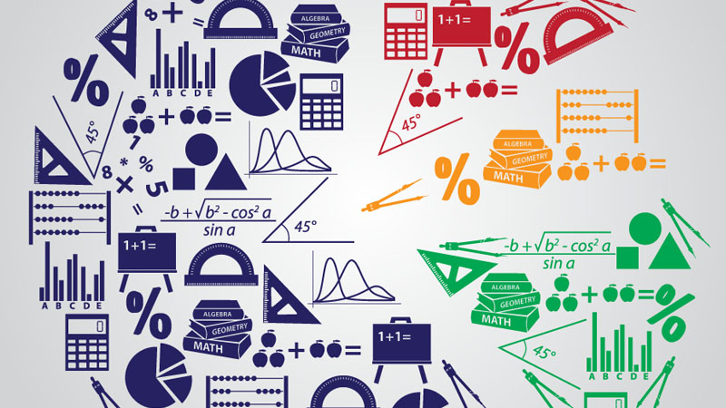

Scifo Scifo
Scifo Scifo 
Mathematics is the study of topics such as quantity (numbers), structure, space, and change. There is a range of views among mathematicians and philosophers as to the exact scope and definition of mathematics.
Mathematicians seek out patterns and use them to formulate new conjectures. Mathematicians resolve the truth or falsity of conjectures by mathematical proof. When mathematical structures are good models of real phenomena, then mathematical reasoning can provide insight or predictions about nature. Through the use of abstraction and logic, mathematics developed from counting, calculation, measurement, and the systematic study of the shapes and motions of physical objects. Practical mathematics has been a human activity from as far back as written records exist. The research required to solve mathematical problems can take years or even centuries of sustained inquiry.
Rigorous arguments first appeared in Greek mathematics, most notably in Euclid's Elements. Since the pioneering work of Giuseppe Peano (1858–1932), David Hilbert (1862–1943), and others on axiomatic systems in the late 19th century, it has become customary to view mathematical research as establishing truth by rigorous deduction from appropriately chosen axioms and definitions. Mathematics developed at a relatively slow pace until the Renaissance, when mathematical innovations interacting with new scientific discoveries led to a rapid increase in the rate of mathematical discovery that has continued to the present day.
Galileo Galilei (1564–1642) said, "The universe cannot be read until we have learned the language and become familiar with the characters in which it is written. It is written in mathematical language, and the letters are triangles, circles and other geometrical figures, without which means it is humanly impossible to comprehend a single word. Without these, one is wandering about in a dark labyrinth. Carl Friedrich Gauss (1777–1855) referred to mathematics as "the Queen of the Sciences". Benjamin Peirce (1809–1880) called mathematics "the science that draws necessary conclusions". David Hilbert said of mathematics: "We are not speaking here of arbitrariness in any sense. Mathematics is not like a game whose tasks are determined by arbitrarily stipulated rules. Rather, it is a conceptual system possessing internal necessity that can only be so and by no means otherwise. Albert Einstein (1879–1955) stated that "as far as the laws of mathematics refer to reality, they are not certain; and as far as they are certain, they do not refer to reality.
Mathematics is essential in many fields, including natural science, engineering, medicine, finance and the social sciences. Applied mathematics has led to entirely new mathematical disciplines, such as statistics and game theory. Mathematicians also engage in pure mathematics, or mathematics for its own sake, without having any application in mind. There is no clear line separating pure and applied mathematics, and practical applications for what began as pure mathematics are often discovered.
The history of mathematics can be seen as an ever-increasing series of abstractions. The first abstraction, which is shared by many animals, was probably that of numbers: the realization that a collection of two apples and a collection of two oranges (for example) have something in common, namely quantity of their members.
Mayan numerals
As evidenced by tallies found on bone, in addition to recognizing how to count physical objects, prehistoric peoples may have also recognized how to count abstract quantities, like time – days, seasons, years.
Evidence for more complex mathematics does not appear until around 3000 BC, when the Babylonians and Egyptians began using arithmetic, algebra and geometry for taxation and other financial calculations, for building and construction, and for astronomy. The earliest uses of mathematics were in trading, land measurement, painting and weaving patterns and the recording of time.
In Babylonian mathematics elementary arithmetic (addition, subtraction, multiplication and division) first appears in the archaeological record. Numeracy pre-dated writing and numeral systems have been many and diverse, with the first known written numerals created by Egyptians in Middle Kingdom texts such as the Rhind Mathematical Papyrus.
Persian mathematician Al-Khwarizmi, the inventor of the Algebra.
During the Golden Age of Islam, especially during the 9th and 10th centuries, mathematics saw many important innovations building on Greek mathematics: most of them include the contributions from Persian mathematicians such as Al-Khwarismi, Omar Khayyam and Sharaf al-Dīn al-Ṭūsī.
Mathematics has since been greatly extended, and there has been a fruitful interaction between mathematics and science, to the benefit of both. Mathematical discoveries continue to be made today. According to Mikhail B. Sevryuk, in the January 2006 issue of the Bulletin of the American Mathematical Society, "The number of papers and books included in the Mathematical Reviews database since 1940 (the first year of operation of MR) is now more than 1.9 million, and more than 75 thousand items are added to the database each year. The overwhelming majority of works in this ocean contain new mathematical theorems and their proofs.
Source: wikipedia.org/Mathematics